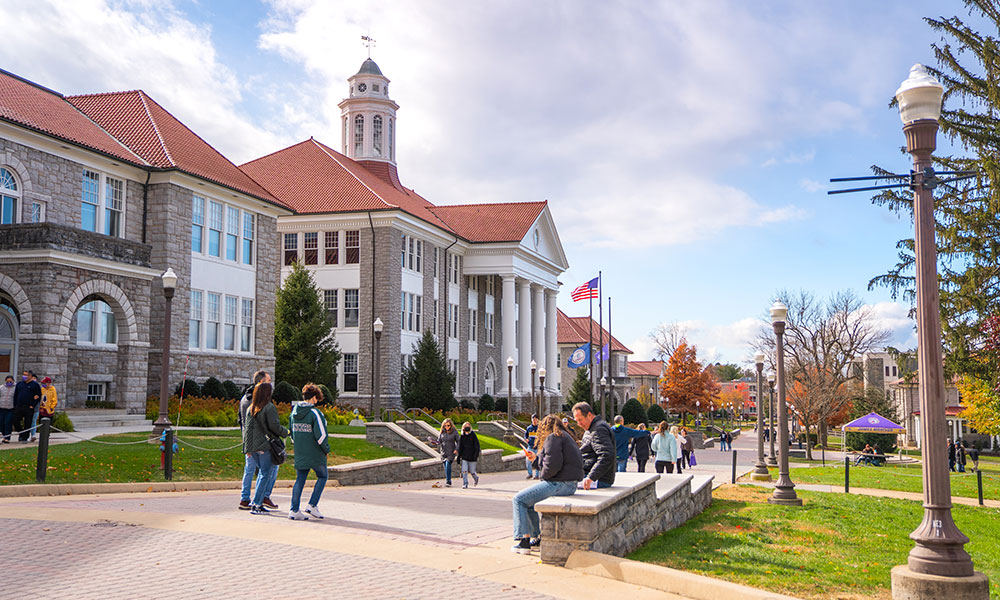

James Madison University
Expected Graduation: May 2027
I am expected to graduate JMU in spring of 2027 with a Bachelor of Science
in Computer Science. During my time at JMU, I am also working towards completing
a minor in math. This minor has allowed me to hone my problem solving skills to
make me a better computer scientist.
Relevant Coursework
Computer Systems II, Computer Systems I, Discrete Structures II, Discrete Structures I,
Software Engineering, Algorithms and Data Structures, Advanced Programming, Intro to
Programming, Intro to Probability and Statistics, Calculus II, Information in Contemporary
Societey, Critical Questions in Education, Psychology: Life Span of Human Development

Work Experience
Software Engineering Intern
BAE Systems | June 2024 - August 2024
As a Software Engineering Intern for BAE Systems, I worked on three main projects.
The Pull Request Tool, the Turnover Tool, and improving the Women in Tech program
materials. With the Pull Request Tool, I used the BitBucket REST API to display git
pull request information for each repository and their respective sub-repositories.
I used Docker to allow for an easier development and deployment experience. This tool
completed a task that used to take 2 hours, take 5 minutes. For the Turnover Tool,
I created a list of changes and fixes needed to make the web app more efficient and
usable. My work for the WiT program included researching new materials like arduinos
boards, receivers, sensors and more to make the program more effective for students.
I then presented my findings to the leader of the WiT program.
Lead CS Ambassador
James Madison University | August 2024 - Current
My specific position as a Lead CS Ambassador is tour coordinator. This means
I communicate with prospective students, their families, and my fellow CS
Ambassadors to arrange tours for students interested in becoming a part of the
JMU CS department. In addition, I organize all tours of the department during
JMU’s open house and admitted students day. As an ambassador, I meet weekly
with a team of 12 to plan professional, social, and academic events for all
students in the CS department. This includes events like Game Night, duck
decorating, career fair preparation workshops and more.
STEAM Specialist
Sunrise Day Camp | June 2025 - August 2025
Sunrise Day Camp is the only full summer day camp offered to
kids with cancer and their siblings free of charge. As the STEAM
Specialist, I work in the STEAM shack teaching kids ages 3-16 coding,
robotics, 3D printing and more. While at Sunrise, I quickly had to
change my lesson plans to meet different language, learning and medical
needs. This job taught me how to quickly adapt to my surroundings and
the importance of STEM being accessible to every student.
Code Coach
The Coder School | January 2022 - July 2023
As a Code Coach, I taught students aged 8 - 14 Scratch and Python. I would
program games and teach those games to students as part of my weekly lesson plan.
Along the way students learned basic computer science concepts like loops,
conditional statements, events and more. I taught students how to create many different
games, from fruit ninja to guess the number. This position taught me the importance
of classroom management, collaboration with coworkers and student centered instruction.